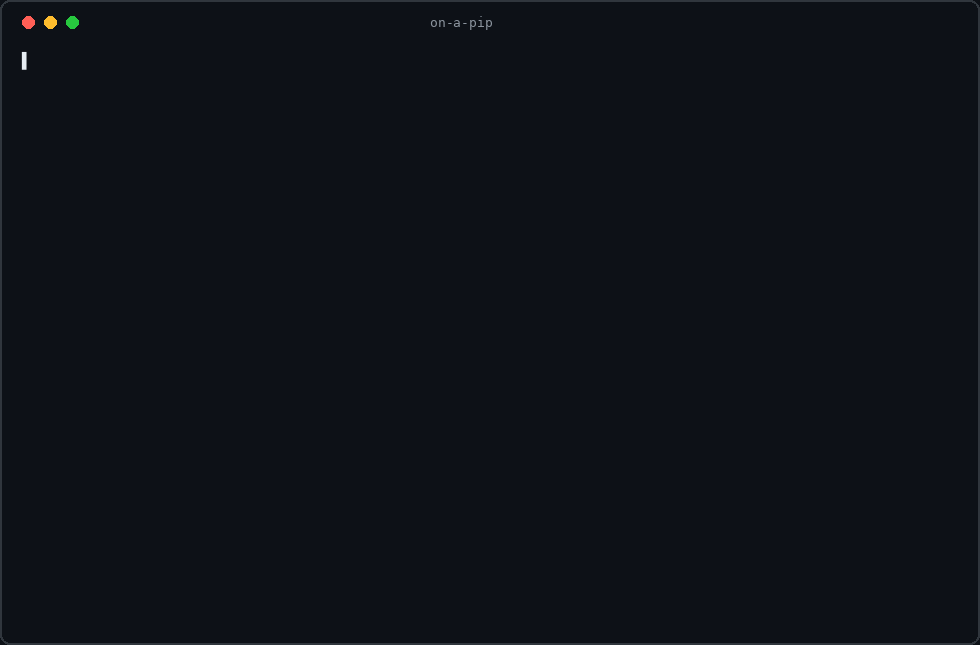
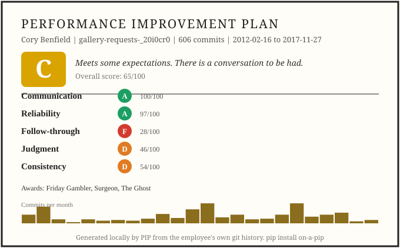
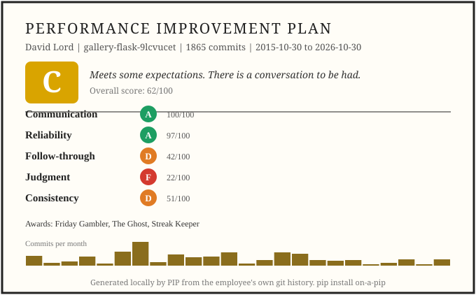
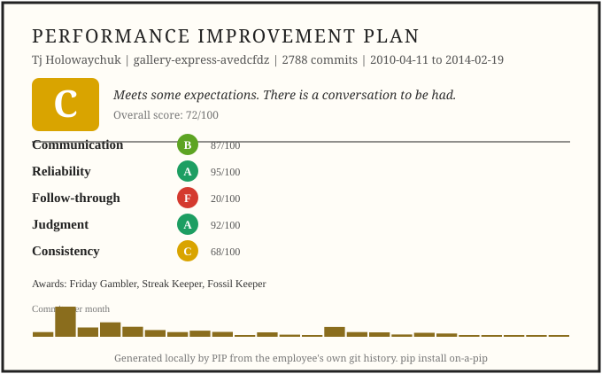
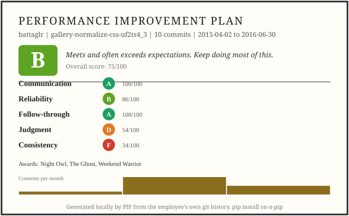
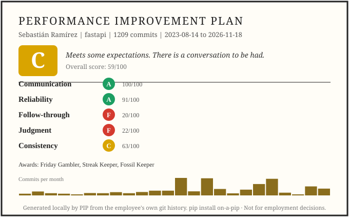
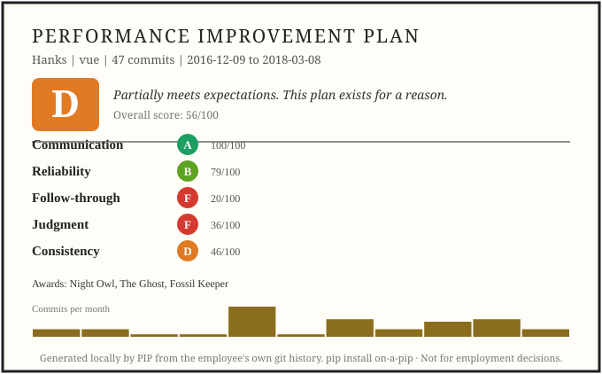
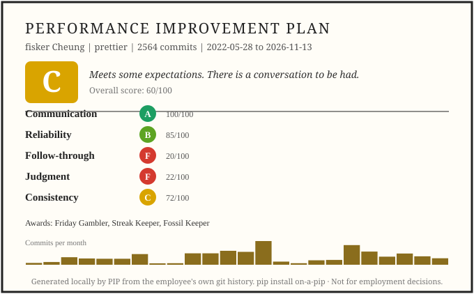
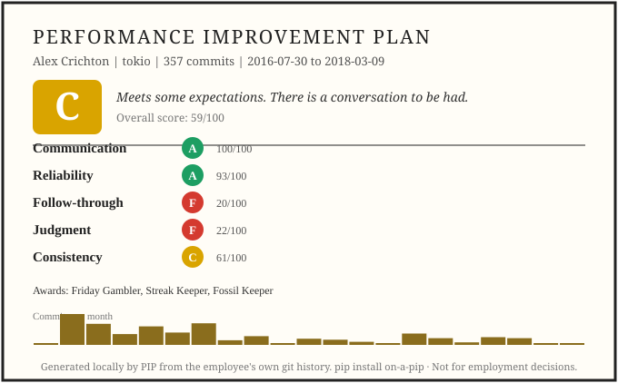
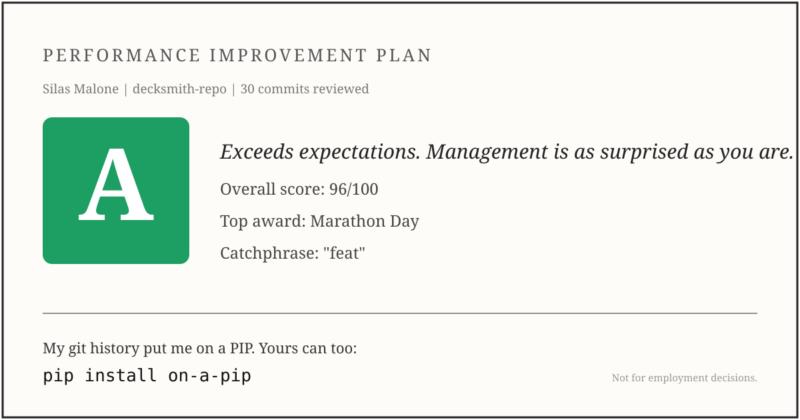

Every tool reviews your code. PIP reviews the programmer.
Every developer keeps a work diary without knowing it: their git history. PIP reads that record, locally, on your own machine, and issues a formal manager-style performance review. Five graded categories, evidence drawn from your own commits, 21 awards, shareable report cards, and a 30-day improvement plan.

A real review, rendered from the tool's actual output. No mockup.
Then it writes you a 30-day improvement plan from your three weakest categories, and signs off with the only appeal process that has ever worked: improve the record. Choose your manager: Corporate, Startup CTO, Supportive Lead, Passive-Aggressive Middle Manager, Pirate Captain, or Noir Detective. The evidence never changes. The tone absolutely does.








Full reviews and leaderboards live in the gallery in the repo. PIP reviewed its own author too: a B, with a Follow-through D, because the tool's own source contains the TODO markers it grades everyone else on.
Commit records are terrible evidence about people, so the grading is honest about it:
--include-bots if you disagree.)--tz Europe/Berlin grades in your timezone, not the server's.No AI. No models. No uploads, accounts, or telemetry. PIP is one Python file of plain arithmetic in the
standard library, so every grade can be traced back to the record that produced it. It runs git log,
git grep and git blame on your machine and nothing else. Your history is embarrassing
enough without uploading it somewhere.
Report cards, README badges, team leaderboards, head-to-head mode, coaching plans, single-file reviews, org boards, and a Wrapped mode for your year in commits are all in the box.

The 1200x630 share card (--share), sized for social posts.